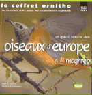
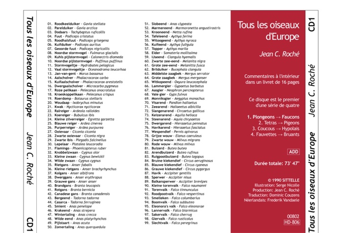

|
Om de bestanden met de hoesjes te kunnen lezen heb je Adobe Acrobat Reader 4.0 of hoger nodig. Als je dit programma nog niet op je computer hebt staan, kan je het gratis downloaden bij Adobe. Let er bij het afdrukken op dat alle crop- en andere reductieinstellingen AF staan (ze staan automatisch aan!) Kijk daarvoor naar uw afdrukinstellingen in Adobe Acrobat Reader voor u gaat drukken! Gelieve alle foutjes en opmerkingen te mailen. |

|
Tous les oiseaux
d'Europe - 1990 (4cd) Jean C. Roché grootte: 1.6 MB - Roche_1990.pdf |
 |
Le Coffret
Ornitho - 2001 (10cd) Jean C. Roché & Jérôme Chevereau grootte: 3.3 MB - Roche_2000.pdf |
 |
|